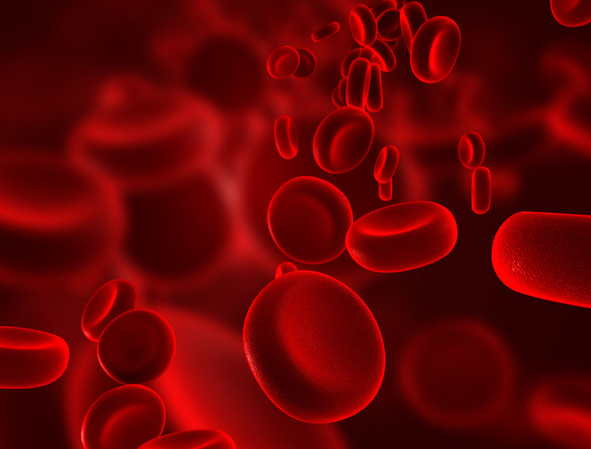
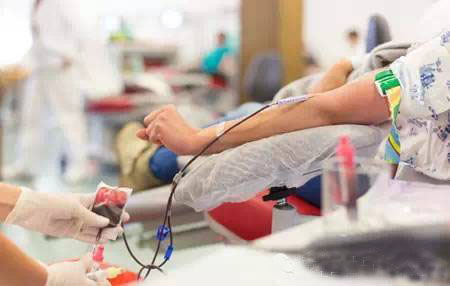
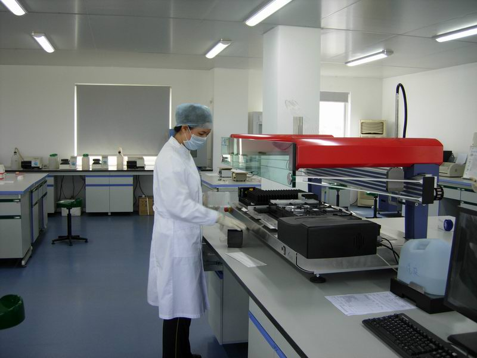
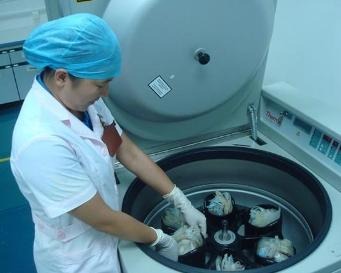
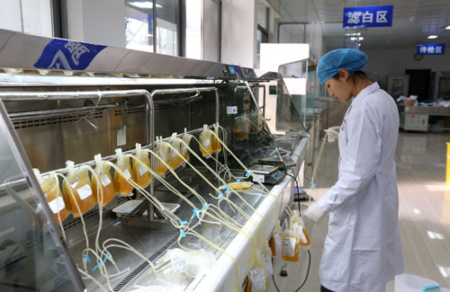
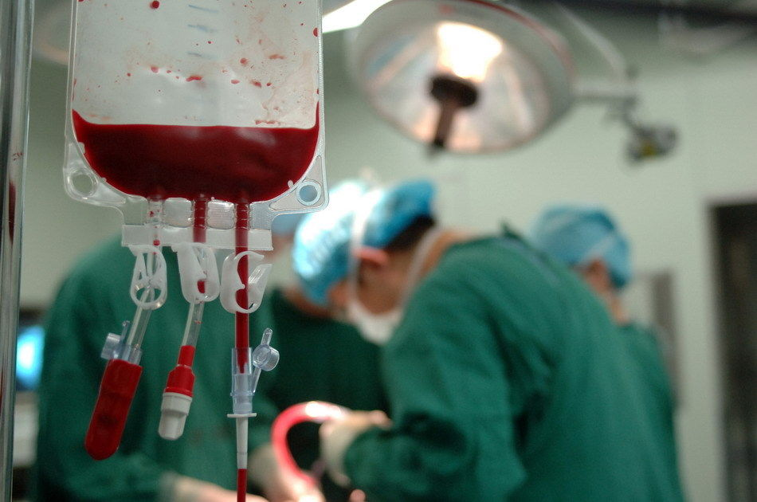

爱心小血滴的“救命历程”
我是小血滴，我的大名叫做红细胞。别看我的生命相比人类显得非常短暂，只有120天，但是我可以联合我的兄弟姐妹们共同发挥作用，维持人类的生命。而且我们是爱的使者，我们从主人的体内通过密闭的采血管道流进绝对安全的血液储存袋，然后经过一系列的过程，于是我小血滴成为了新主人的贴身保镖。
奉献
我的主人是个萌妹子，却有着一颗女汉子的心。帮助别人是她最乐于做的事。周末，她利用放假时间赶到一家爱心献血车。经过体检合格后，我的小主人躺上了采血椅进行献血。随着血流像坐滑滑梯一般，我就到了一个密闭的经过高效无菌消毒的血液储存袋中。我的伙伴红细胞们和我的白细胞哥哥们、血小板弟弟们都只能静静地躺在我们的“游泳池”——血浆里，不像在主人的身体里我们可以到处闲逛。大家窃窃私语：“我们会被送到哪里去呀？我们的新主人会是谁呀？”
检验
等我们被叫醒时，发现已经在血站的化验室了。原来是工作人员把我们放在一个大风车中快速旋转了好多圈，使我们上下分层，然后召集了处于上层的血浆兄弟。工作人员用先进的检测仪器，两种不同的试剂对我做了一个全面的检测。我看到工作人员抽取我们血浆兄弟的少量样本，分成七份，分别进行血型、血色素、谷丙转氨酶、乙肝表面抗原、丙肝抗体、艾滋病病毒抗体、梅毒抗体的检测，我们顺利通过了七道关。听工作人员介绍说，有的主人献出的血只要有其中一项指标不合格，血站就会把不合格的血液送到指定的医疗废弃物处理机构统一销毁。
分离
等了大约两场足球赛的时间，各项检测报告都出来了，我们乘上一辆专门送血的袖珍电梯来到了成分分离室。听这名字我们就感到有些失落，因为我们这些兄弟姐妹都要分开了。但是想想在医院里，不同症状的病人需要我们不同的兄弟去救他们，我们可以发挥自身的优势和特点，也就感到十分欣慰了。经过20分钟高速的离心，我的头都晕了，就像在嘉年华游乐场一样。睁开眼睛之后，我终于看明白了，由于我是我们兄弟之中最胖的，所以经过离心之后我沉在了最下面，成了其他兄弟的奠基石。白细胞哥哥和血小板弟弟他们体重相仿而且比我轻一点，于是就踩在我的头上了。
制备
随后又来了一批工作人员，索性把我们抽到了另一个血液储存袋里制成血浆，然后保存到一个零下20℃大冰箱里。工作人员介绍说，在这个环境里可以生存一年呢！而在我这边，工作人员给我们补充了红细胞保存液，我正式更名为红细胞悬液，我们可以在这里快活地吸取其中的营养，在一个4℃的冰箱里，在35天的期限内等待需要我们救助的病人。在我们的冰箱对面，有一个比我们矮、比我们小的暖箱，这个是专门保存血小板弟弟的暖箱，里面的温度是22℃，他们可舒服了，又温暖又可以坐着荡秋千，因为他们需要时刻补充活力，所以需要运动、运动、再运动。不过他们在临床上供不应求，而且他们在秋千上最多也只能待5天。
救助
“叮呤呤，叮呤呤”，电话铃响彻整个血库，有个产妇大出血，她的血型在我们黄种人中是最罕见的，在万分之一左右。这位手术台上的产妇急需AB型、Rh阴性的红细胞悬液。真是无巧不成书，我就是AB型、Rh阴性的小血滴，该出手时就出手，于是我披上外套，经过电脑条形码确认，就跟着血站的紧急送血车前往医院。在医院里，不同的病人需要的血液成分不同，例如严重贫血的病人需要我们红细胞悬液的救助；烧伤病人需要的是血浆；而有些白血病病人及肿瘤放疗、化疗后的病人为了防止及减少出血，需要用血小板。原来血液输注给病人是把血液中的某一成分输给病人，而不是直接输注全血。
